IsoCam es el software para ejecutar perfilados con el disco; permite dibujar o importar formas, decidir el perfil y aplicar distintos modos de mecanizado.
La gestión de la programación del trabajo se divide en distintas fases que se describen en los apartados siguientes.
Al abrir el programa IsoCam, si no existe ningún mecanizado creado anteriormente, el operador podrá crear uno nuevo desde el primer paso del mecanizado.
Si, por el contrario, existe un mecanizado creado anteriormente, se cargará automáticamente y el operador accederá directamente al último paso del mecanizado:

Elementos comunes a los distintos pasos
La interfaz de usuario está compuesta por distintas áreas.
Menú: utilidades rápidas.
Barra superior: funciones específicas de la página activa.
Parte central: contiene el dibujo o el área activa según la página.
Barra lateral: ventana que contiene los parámetros que deben modificarse.
Barra inferior: botones generalmente válidos en distintas áreas del software.
Los siguientes elementos permanecerán siempre visibles, independientemente de la fase actual del proceso.
Menú
La barra de menús se encuentra en la parte superior, por encima de todos los demás elementos de esta interfaz.
Visualizar | Se ponen a disposición del operador algunas opciones relativas a la visibilidad de las piezas presentes en el área de trabajo. |
Opciones | Es posible modificar opciones relativas a los colores. |
Idioma | ISOCAM está disponible actualmente en los siguientes idiomas:
|
Barra lateral derecha
 | Configuración |
 | Info |
 | Gestión de pasos |
 | Cerrar |
Configuración
Este panel permite pasar al modo Avanzado de IsoCam, volver a la versión básica y modificar los valores de Paso de cuadrícula en X e Y.

Barra inferior
 | Nuevo mecanizado |
 | Abrir mecanizado |
 | Guardar mecanizado |
 | Modificar mecanizado |
Dibujo de la sección (paso 1 de 4)
La primera fase de la programación consiste en dibujar la sección que se va a mecanizar. La ventana ofrece los mandos característicos de un software CAD: dibujo de línea, dibujo de arco, snap, mover, etc.
La idea básica del software es crear la sección como un boceto rápido que posteriormente se modificará, entidad por entidad, mediante los mandos correspondientes. Sigue estando disponible en todo momento la posibilidad de importar dibujos .dxf generados por sistemas CAD externos.

Barra superior
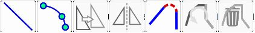
 | Comando de dibujo de línea |
 | Comando de dibujo de arco |
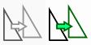 | Mueve los segmentos seleccionados |
 | Figura especular |
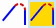 | Redondear |
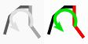 | Invertir selección activa |
 | Eliminar segmentos seleccionados |
Barra lateral derecha
Propiedades de línea
Al seleccionar una línea en el área de trabajo, la columna lateral derecha se actualiza para mostrar las características de la entidad seleccionada, que pueden ser modificadas por el usuario:
Longitud | Indica la distancia lineal entre los dos extremos de la línea seleccionada, calculada en función de las coordenadas del espacio de trabajo. |
Ángulo | Indica la orientación de la línea respecto al eje horizontal del sistema de referencia. |
Δx | Indica la variación de la coordenada X entre el punto inicial y el punto final de una línea o entidad, es decir, la distancia horizontal recorrida respecto al eje X del sistema de referencia. |
Δy | Indica la variación de la coordenada Y entre el punto inicial y el punto final de una línea o entidad, es decir, la distancia vertical recorrida respecto al eje Y del sistema de referencia. |
 | Alargar/Acortar línea seleccionada |
 | Aproximar ángulo |
Escalar segmentos conectados | Permite aplicar un escalado proporcional a todas las entidades conectadas directa o indirectamente con la línea seleccionada. |
Propiedades de arco
Al seleccionar un arco en el área de trabajo, la columna lateral derecha se actualiza para mostrar las características de la entidad seleccionada, que pueden ser modificadas por el usuario.
El arco puede definirse de distintas formas: por puntos, como centro, radio y arco, etc.
Las distintas características se muestran en la ventana que aparece a la derecha.
La modificación de algunas características puede satisfacerse de distintos modos, por ejemplo cambiando el radio o el punto inicial/final; para determinar el modo de modificación está disponible la casilla «Centro fijo».
Radio | Indica la distancia constante entre el centro de una curva circular o de un arco y cualquier punto de su circunferencia. |
Ángulo inicial/final | Ángulo del punto inicial o final respecto al centro. |
Tangente ant. / sig. | Modifica el ángulo inicial o final para que el arco sea tangente a la entidad anterior o siguiente. |
Centro fijo | Permite decidir las consecuencias de una modificación (radio o ángulo). |
Desplazar / Mover selección
Al activar el comando «desplazar» aparece la ventana con los parámetros de movimiento. El movimiento puede realizarse directamente haciendo clic en el área de dibujo (también con los snap activos) o configurando los parámetros.
El desplazamiento debe confirmarse con el botón «OK».
 | Selector de posición |
 | Traslación |
Mover copia | Si está activada, la función crea una copia de la entidad seleccionada y aplica el desplazamiento únicamente a esta copia, dejando sin cambios la entidad original. |
Reflejar
Después de activar el comando, es necesario establecer el centro de simetría haciendo clic en el área de trabajo o introduciendo las cotas, seleccionar la dirección de reflejo y pulsar el botón «OK» para confirmar.
Centro de simetría | Permite modificar las coordenadas del centro de simetría utilizado para el volteo horizontal o vertical de la entidad seleccionada. |
Coordenadas que invertir | Indica si se debe realizar el volteo horizontal, vertical o en ambas direcciones. |
Reflejar copia | Si está activada, la operación de reflejo se realiza creando una copia reflejada de la entidad seleccionada y manteniendo intacta la original. |
Redondear
Un primer mensaje, mostrado en la columna de la derecha, permite al operador establecer el radio del redondeo y confirmar la selección.
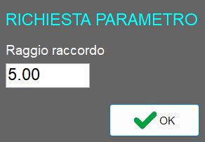
Un segundo mensaje informa al operador de que ya es posible insertar redondeos entre dos líneas, operación que permanece disponible hasta que se desactive la función.

A continuación se muestra un ejemplo de aplicación de redondeos en dos líneas adyacentes y en una línea adyacente a un arco:

Después de aplicar los redondeos:
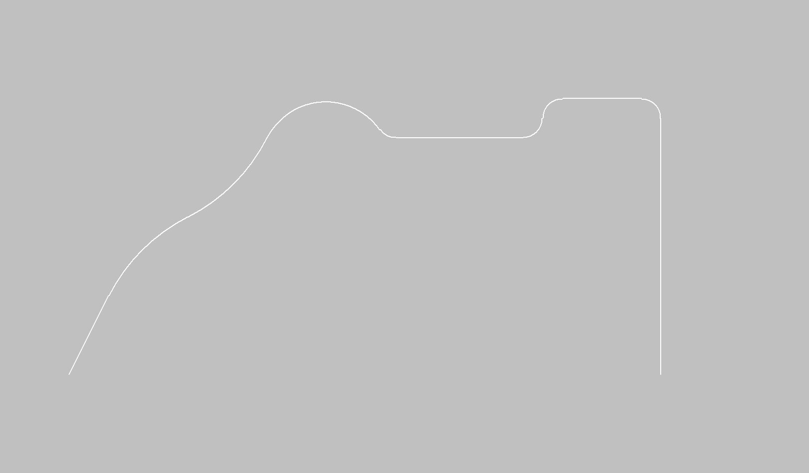
Barra inferior
 | Importar archivo DXF |
Exportar archivo DXF | |
 | Deshacer modificación |
 | Snap inicio/fin |
 | Comando Orto |
 | Comando Segmentos conectados |
 | Cuadrícula de dibujo |
 | Undo Zoom |
Seleccionar área para Zoom | |
 | Restablecer Zoom |
Selección de perfil (paso 2 de 4)
La sección dibujada anteriormente debe aplicarse a un perfil adecuado.
El perfil puede ser lineal o en arco, en el plano X/Y o también vertical; en función de la selección se activarán o desactivarán algunos modos de trabajo. Por ejemplo, un perfil en arco en el plano XY solo puede mecanizarse con el disco vertical y, a la inversa, un perfil en arco en el plano XZ o YZ.
El tipo de perfil se elige mediante los botones de la izquierda; en la parte superior central se muestran los parámetros para describir geométricamente el perfil y en la parte inferior central se muestra la vista previa del resultado.

Parte central
Perfil lineal | Se establece la dirección y la longitud. |
Perfil en arco | Se definen: dirección, plano de trabajo, concavidad y características geométricas. |
Perfil circular | Solo se mecanizará externamente con disco horizontal. |
Parámetros del perfil lineal

Ejecución del perfil | Hay dos modos disponibles: «A lo largo de X» y «A lo largo de Y». |
Longitud de línea (L) | Longitud horizontal de la base del segmento inclinado, medida entre el punto inicial y el punto final proyectado horizontalmente. |
Delta Z del punto final (H) | Altura del segmento inclinado, es decir, la diferencia de cota entre el inicio y el final del segmento. |
Parámetros del perfil en arco

Ejecución del perfil | Elección entre «A lo largo de X» o «A lo largo de Y». |
Orientación del mecanizado | Elección entre «Plano XZ» o «Plano XY». |
Tipo de mecanizado | Elección entre «Cóncavo» o «Convexo». |
Longitud (L) | Distancia horizontal entre los dos extremos del arco, es decir, la cuerda que une el inicio y el final del arco. |
Radio inicial (R) | Distancia desde el centro del arco hasta un punto del propio arco. Determina la curvatura global del arco. |
Desarrollo vertical (H) | Altura máxima del arco respecto a la cuerda L; representa la distancia vertical entre el punto más alto del arco y la cuerda. |
Amplitud del ángulo (A) | Ángulo central subtendido por el arco, expresado en grados. |
La modificación de uno de los siguientes valores: «Longitud», «Radio inicial», «Desarrollo vertical» o «Amplitud del ángulo», provoca el recálculo automático de los parámetros restantes.
Parámetros del perfil circular

Radio inicial (R) | Determina el radio desde el punto de partida. |
Protección | Esta casilla indica si durante el mecanizado el eje C gira (protección activa) o permanece inmóvil con C=0_ (sin protección). |
Barra inferior
 | Vista de la mesa |
 | Luces adicionales |
 | Gestión de vistas predeterminadas |
Parámetros de trabajo (paso 3 de 4)
La página está dividida en cuadros con distintos tipos de datos que deben configurarse para el mecanizado

Parámetros de herramienta
El operador puede definir los parámetros de la herramienta:

Si se trata de un proyecto nuevo, los datos se cargan automáticamente en función de la herramienta instalada físicamente; si se trata de un mecanizado guardado anteriormente, los datos de la herramienta serán los ya guardados en el programa anterior.
 | Nombre de herramienta |
 | Espesor |
 | Diámetro |
 | CRF (Centro de rotación de la brida) |
 | Cota de seguridad |
 | RPM (Revoluciones por minuto) |
Orientación del mecanizado
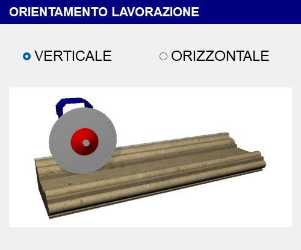
Perfil lineal
Para perfiles lineales es posible elegir si se realiza el mecanizado con el disco en posición vertical o con el disco en posición horizontal (desde el frente o desde la izquierda).
Orientación vertical | Orientación horizontal |
 | 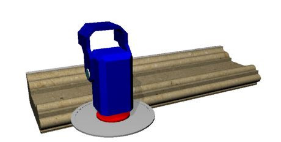 |
Perfil en arco
Para perfiles curvilíneos, la orientación está condicionada por el tipo de perfil:
Tipo de mecanizado | Orientación vertical | Orientación horizontal |
Cóncava |  |  |
Convexa |  |  |
Tipo de mecanizado

El mecanizado puede realizarse de dos modos:
 | Modo por cortes |
 | Modo espatulado |
Configuración por cortes
Se realizarán cortes paralelos entre sí siguiendo el perfil seleccionado, con una distancia entre cortes tomada de un parámetro.

Paso | Indica la distancia entre la posición de un corte y la del corte adyacente. Si es superior al espesor del disco, quedará material entre las pasadas. |
Alargamiento inicio / fin | Permite alargar un corte en la parte inicial / final en el valor establecido. |
Más auto | Al activar la casilla se incrementa automáticamente el valor de alargamiento en función de un valor establecido por el sistema. |
Sobrematerial | Espesor del material que debe dejarse por encima de la sección final deseada. |
Dirección de los cortes | La dirección del corte puede ser de derecha a izquierda o de izquierda a derecha, según la configuración seleccionada. |
Configuración de espatulado
El movimiento será transversal a la dirección del perfil y se utiliza para el acabado superficial de la pieza.

Paso de espatulado | Indica la distancia entre un movimiento transversal y el siguiente a lo largo de la dirección del perfil. |
|---|
Velocidad y modo de corte
En función de las selecciones anteriores aparecen distintos menús para seleccionar los parámetros necesarios para definir el mecanizado.
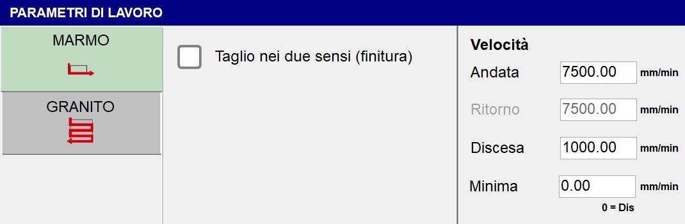
Si el tipo de mecanizado seleccionado es la Configuración por cortes, estarán disponibles dos tipos de parámetros de trabajo:
 | Modo Mármol |
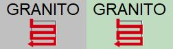 | Modo Granito |
Modo Mármol
Parámetros generales:
Cortes en ambos sentidos (acabado) | Esta casilla permite establecer una velocidad de retorno distinta de la velocidad de ida. |
No elevar nunca (acabado) |
Parámetros de velocidad:
Ida | Velocidad de ejecución de ida de la pasada. |
Retorno | Velocidad de ejecución de retorno de la pasada. |
Penetración | Velocidad de ejecución de penetración de la pasada. |
Mínima | Al establecer un valor distinto de cero, la velocidad de corte dependerá de la profundidad del propio corte; por tanto, se tendrá un movimiento a velocidad de ida para cortes con profundidad nula y a velocidad mínima cuando el corte esté a la máxima profundidad para la sección seleccionada. |
Modo Granito

Parámetros generales:
Arranque de material en corte | Cantidad de material que se elimina en la pasada de ida. |
Arranque de material en retorno | Cantidad de material que se elimina en la pasada de retorno. |
Si el tipo de mecanizado seleccionado es la Configuración de espatulado, estará disponible un único parámetro de trabajo:
Velocidad - Mecanizado | Establece la velocidad con la que se ejecutará el tipo de mecanizado espatulado. |
|---|
Parámetros de mecanizado (avanzado)
 | Parámetros de mecanizado (avanzado) |
En esta pantalla es posible comprobar y modificar distintos parámetros, muchos de los cuales se han establecido en los pasos 2 y 3.
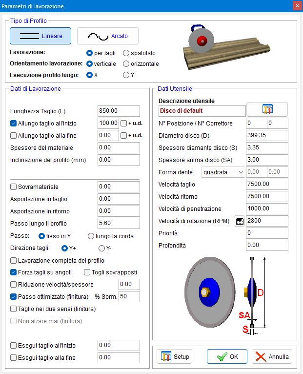
La primera operación consiste en seleccionar el tipo de perfil que se va a utilizar:
 | Lineal |
 | En arco |
Y, a continuación, los siguientes parámetros:
Mecanizado | Puede ser por cortes o espatulado. |
Orientación del mecanizado | El mecanizado puede realizarse en vertical o en horizontal. |
Ejecución del perfil a lo largo de | A lo largo de X o Y. |
Datos de mecanizado
Para el perfil lineal es posible establecer los siguientes parámetros:
Espesor del material | Define la medida del espesor del material (en mm) |
Inclinación del perfil (mm) | Permite definir la inclinación del perfil indicando la diferencia de altura entre el punto final y el punto inicial. |
Para el perfil en arco están disponibles los parámetros configurables en los pasos anteriores.
Ambos perfiles tienen además en común los siguientes datos de mecanizado:
Paso | Fijo en Y: mantiene fija la distancia entre los cortes independientemente de la sección subyacente |
Dirección de los cortes | Elección entre «Y_» o «Y-». |
Mecanizado completo del perfil | Permite elegir si se ejecuta o no el mecanizado completo del perfil. |
Forzar cortes en ángulos | Añade cortes en los puntos de variación de pendiente. |
Eliminar superpuestos | Si esta casilla está activada y el valor «Paso» es mayor que el valor «Espesor», se eliminarán los cortes superpuestos. |
Paso optimizado (tintura) % Solap. | Si el valor «Paso» es menor que el valor «Espesor», el paso se optimizará en las líneas horizontales. |
Ejecutar corte al inicio | Permite elegir si se ejecuta o no un corte al inicio del perfil. Mediante la casilla situada al lado es posible establecer la profundidad de este corte. |
Ejecutar corte al final | Permite elegir si se ejecuta o no un corte al final del perfil. Mediante la casilla situada al lado es posible establecer la profundidad de este corte. |
Datos de herramienta
Aquí se muestran algunos datos configurados anteriormente y otros parámetros específicos de la herramienta.

Descripción de la herramienta | Una breve descripción de la herramienta |
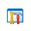 | Almacén de herramientas |
N.º de posición | Indica el número de posición dentro del almacén de la herramienta seleccionada. |
N.º de corrector | Indica el número que identifica el nombre de la herramienta seleccionada. |
Espesor del alma del disco (SA) | Espesor del cuerpo portante central del disco. |
Forma del diente | El operador podrá elegir entre tres formas de diente:
|
 | Selección de material
|
Prioridad | Es posible establecer un valor de prioridad (estrictamente positivo). |
Profundidad | Indica la profundidad del corte de la herramienta. |
Mecanizado (paso 4 de 4)
En función de las selecciones anteriores se muestra una vista previa de los cortes calculados. La página se divide en distintas áreas con los mandos para gestionar las modificaciones.

Una vez comprobados los cortes o realizadas las modificaciones deseadas, pulse el botón «ADELANTE» para abrir la página de generación del programa de corte.
Menú
En el cuarto paso se hace visible una opción adicional en el menú superior:
Cortes | Este menú ofrece al operador algunas opciones rápidas para los cortes generados. |
|---|
Barra superior
 | Generación de cortes |
 | Modificar la posición del corte |
 | Añadir un corte de cabeza para separar las piezas |
 | Añadir un corte de cola para separar las piezas |
Añadir un corte en la posición del ratón (Ins) | |
 | Eliminar el corte seleccionado |
 | Eliminar los cortes anteriores al corte seleccionado |
 | Eliminar los cortes posteriores al corte seleccionado |
 | Simulación de cortes |
Parte central
Barra lateral derecha
En el cuarto paso, esta barra contiene la siguiente información:
 | Número progresivo de corte |
 | Datos generales |
 | Datos de cortes |
Barra inferior
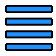 | Opciones del corte |
 | Mover/alargar cortes |
 | Shift |
Creación del programa
Una vez completada la preparación del cuarto paso, es posible acceder a la fase final, que incluye la visualización del resultado obtenido y la generación del archivo ISO.
En la parte central se muestra el modelo 3D del mecanizado generado teniendo en cuenta el modo de trabajo. Haciendo clic en el área es posible girar la vista y gestionar el zoom.

Procedimiento básico
Paso 1
Para empezar, pulse el botón «Nuevo mecanizado». Asegúrese de que la función «Segmentos conectados» esté activa y, a continuación, active el comando «línea». Realice una serie de clics en el área de trabajo para dibujar la sección deseada. Una vez completado el dibujo, vuelva a hacer clic en el comando «línea» para desactivarlo. A continuación, seleccione cada entidad individualmente para comprobar y, si es necesario, modificar sus parámetros.
Paso 2
En este paso, el operador puede establecer algunos datos generales básicos relacionados con el tipo de mecanizado deseado.
Paso 3
En este punto es posible establecer parámetros relativos a la herramienta, al tipo, a la orientación y a los parámetros del mecanizado seleccionado.
Además, en el panel «Parámetros de mecanizado (avanzado)» es posible obtener una visión general de todos los parámetros configurados hasta ese momento.
Paso 4
Se genera automáticamente una lista de cortes para el mecanizado actual. Es posible insertar, modificar y eliminar cortes según las necesidades operativas.
Generación ISO
El paso final del mecanizado permite al operador crear un archivo ISO a partir del mecanizado obtenido o reiniciar el procedimiento.